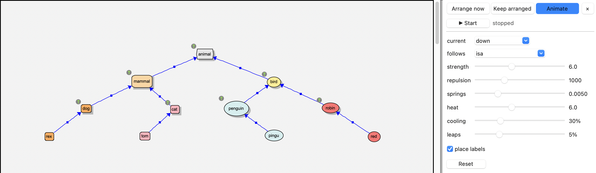
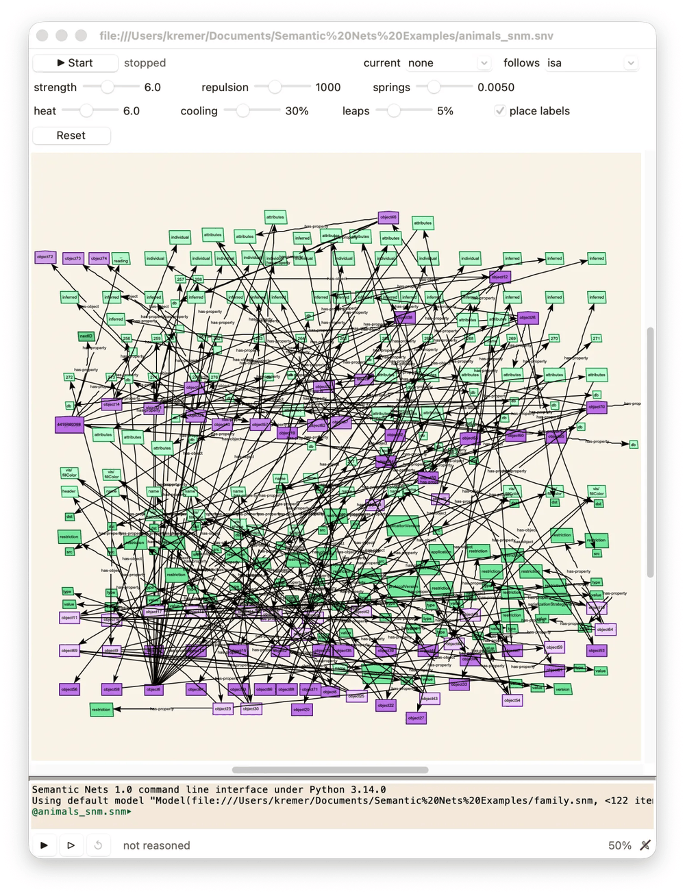
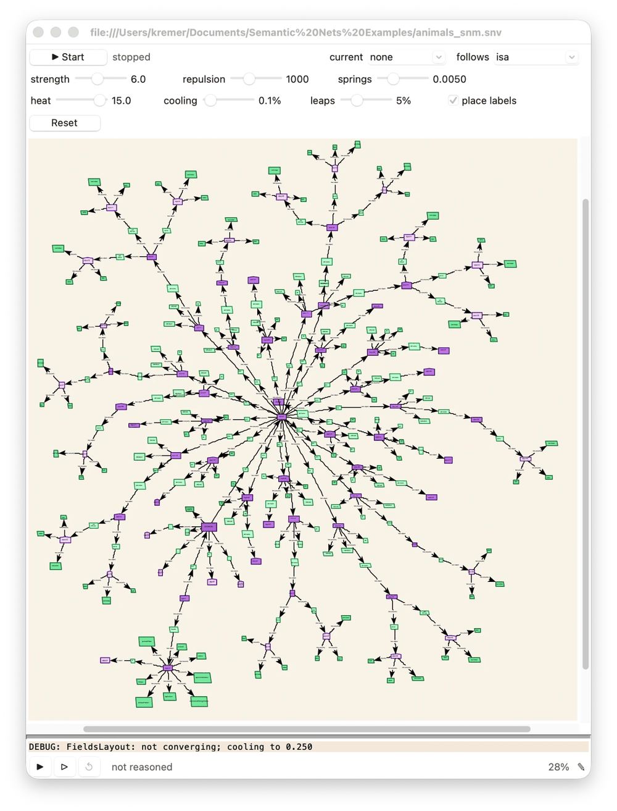

Animation Layout¶
The animation layout arranges a view for you, and you watch it happen. (For layouts that arrange a view at once, or keep it arranged as it changes, see Arranging a View.) It treats the drawing as a physical system: objects push one another apart, like charged particles, and relations pull the objects they connect together, like elastic bands. The objects move a little at a time until things settle down, and then it stops by itself.
Start it from view | layout | animate | start on the background menu, or with the Start button at the top of the layout panel’s Animate page (see Arranging a View). Start it again (or press Stop) to stop it early. A whole run is a single command: Cmd-Z puts everything back where it was.
What moves¶
Nodes, context windows and relation types are moved. Individual relations aren’t: their labels float midway between their ends. Hidden objects stay where they are, and what’s inside a context window moves with the window.
You can drag things while it runs – the layout waits until you’ve let go, then works around where you’ve put them.
The current¶
Without a current, the layout only spreads things out evenly. A current gives it a direction: it lines up the relations of one type, putting their destinations upstream of their sources, in layers. With isa and a current flowing down, you get a class diagram: each type above its subtypes and instances. With a relation like manages, flowing right, an organization chart on its side.

A small taxonomy laid out with an isa current flowing down, and the layout panel’s Animate page.¶
The current can flow in eight directions (down, up, left, right, and the diagonals), or none. It runs in phases, shown at the top of the layout panel:
- arranging
The current sorts things into layers. Objects in different layers can pass one another, so that a tree drawn upside down can turn itself over.
- settling
Things slow down – the temperature, T, how far an object may move in a step, falls – until nothing moves much.
- straightening
The layers are lined up.
At the very end, relation labels are tidied up.
The settings¶
The layout panel’s Animate page (View | Layout panel in the menu bar, or view | layout | animate | settings… on the background menu: see Arranging a View) has the layout’s settings, and the panel’s top its start/stop button and status. Hover over any of them for a description.
control |
does |
|---|---|
play |
start or stop the layout |
status |
what it’s doing (see above), and its temperature, T |
current |
the current’s direction, or none |
follows |
the relation type the current lines up (by default, isa) |
strength |
how hard the current pulls things into their layers |
repulsion |
how strongly objects push one another apart |
springs |
how strongly relations pull their ends together |
heat |
random jiggling (with a current), which fades as the layout settles. It shakes the layout out of dead ends; more heat is livelier, but takes longer to settle |
cooling |
how fast it cools: how much of T it loses each time it stops making progress (30% by default). Slide it left for a long run – at 0.1%, with a current, an hour or so |
leaps |
the chance, in a step, of a leap: like a mutation, an object is thrown somewhere else entirely – across the graph, or out into the space around it – and pulled back in by another way, upsetting what it’s related to as it comes. The object is picked at random, but one with a long relation (eg: stuck behind a wall of other objects) is the likeliest to go – however many relations it has. Leaps fade as the layout cools, and stop as it nears the end, to give the last ones time to come back; 5% by default, 0% for none. The status shows how many there have been |
place labels |
whether a run ends by finding free places for the relations’ labels (which can take a while in a crowded view). Ticked between runs, it places them straight away; ticked during a run, at the end of the run |
Reset |
put the sliders back to their defaults |
Changes take effect immediately, even while it runs. The current’s settings are also on the view | layout | animate menu (current direction, current strength, current follows). They’re saved with the view, as are the sliders and place labels.
An example¶
The XML reader plugin (see Plugins) read the animals model’s own file, animals.snm, making a model of its XML: some 300 objects – the file’s objects, their properties, and so on – and their relations. Before it’s arranged, it’s a tangle:

Before: about 300 objects, criss-crossed by their relations.¶
After a long run – cooling at 0.1%, leaps at 5%, and no current – the tree that’s in the file shows itself: the file’s root in the middle, and each object’s properties around it, out to the leaves.

After: the same view, laid out by a long run.¶
Tips¶
If things end up too crowded, raise repulsion; if they drift too far apart, raise springs.
If a tree won’t turn the right way up, raise heat a little and run it again.
If parts of the graph get stuck behind others, far from what they’re related to, raise leaps (eg: to 10–20%), and run it again. A leap late in a run may leave something out on its own: run it again with leaps at 0%, or just move it.
For a big or tangled view, slide cooling to the left and leave it to run (eg: while you get a coffee): the longer it stays warm, the more it explores before it settles. Press the button to stop it whenever you like.
Running it again from where it stopped usually improves things further. Untick place labels while you do, and tick it again at the end: the labels are only placed once.
Before laying out a big model, hide what you don’t need to see (eg: the isa individuals, or system objects): see Viewing.